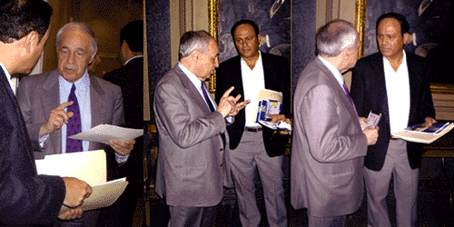

| In 1995 Di Pietro's path crossed with that of Pierre
Boulez, the famous composer and conductor. He describes this meeting
with Boulez as part of a journey that was completely unforseen,
an accident in an organic process on the road of the creative life.
Boulez a fellow traveler and former 'fire source' of his youth was
long ago set aside, because with the accumlation of experience,
'life is like that'. Then for Boulez's 70th birthday a series of interviews took
place and Di Pietro realized he was ready to question the composer
of Le Marteau Sans Maitre, on what happened to modernism,
in a much longer project. The result is this brilliant series
of conversations:
Dialogues with Boulez: Conversations with Rocco
Di Pietro,
to be published in the summer of 2,000 by Scarecrow Press. The
book will be launched in Orchestra Hall of the Chicago Symphony
Orchestra with a book signing in the fall of 2,000. Excerpts have
been published serially over the last three years by the journal
21st Century Music. Paul Griffiths noted critic and Boulez
scholar has written a forward to the book calling these dialogues
"the only interviews that capture Boulez's speaking voice". Excerpts,
from the conversations can be heard audio sample, and
a sample of the published interview can be downloaded written document
To receive more information about
the Boulez Dialogues Scarecrow Press, or email Rocco Di Pietro at rdi@cscc.edu
 |
{kind=link}